Pyramid Grip
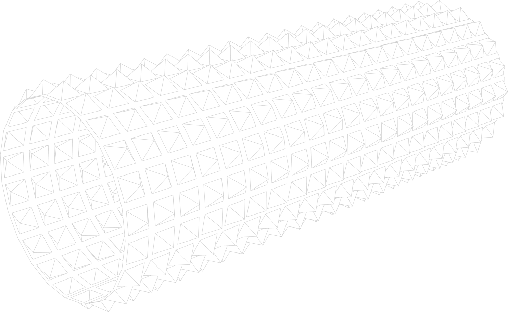
-
Add a plane. Subdivide it 20 times horizontally and vertically.
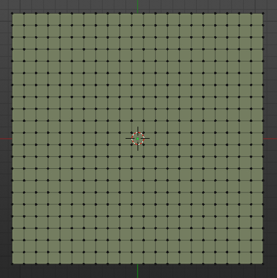 -
Select all the faces and inset individually twice.
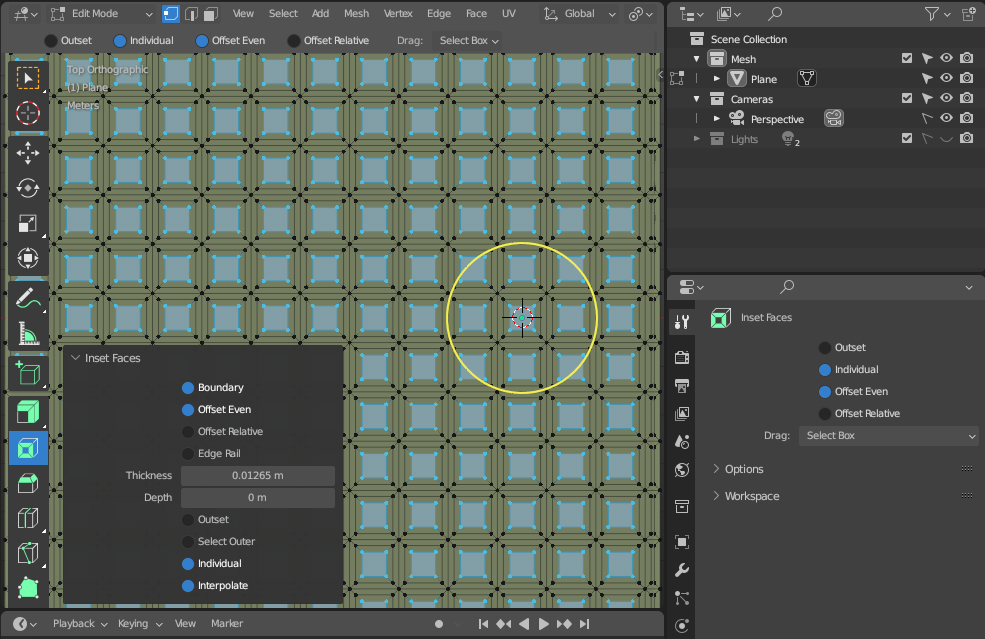 -
Press Alt + S to shrink flatten
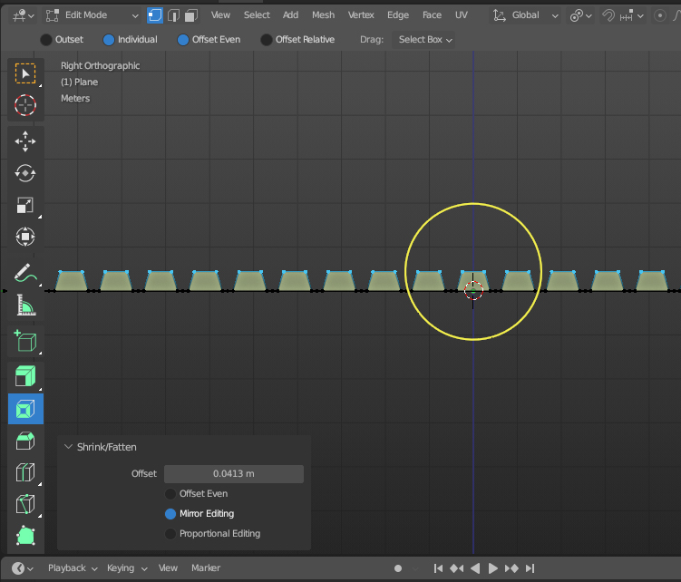 -
Press M and select Collapse to merge the top vertices.
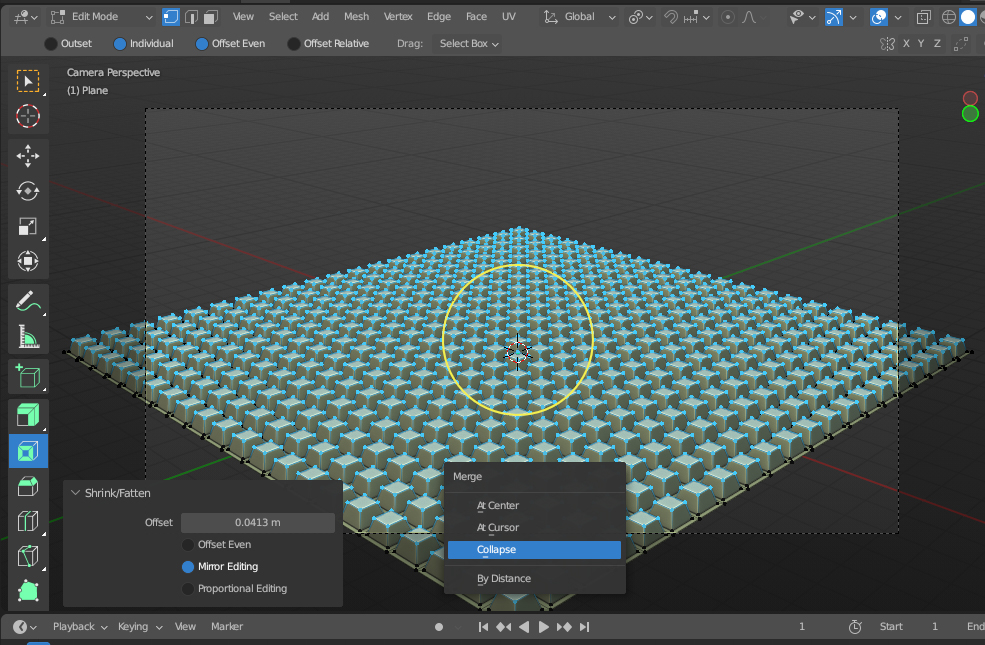 -
Add an Empty at the world origin. Make sure Empty and Place are at the same location.
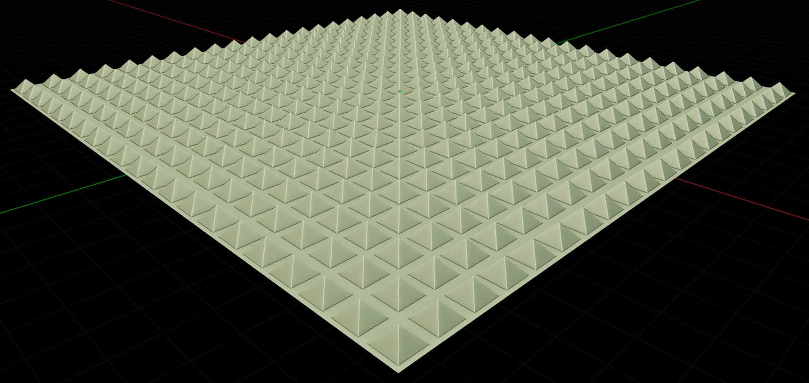 -
Apply Simple Deform modifier.
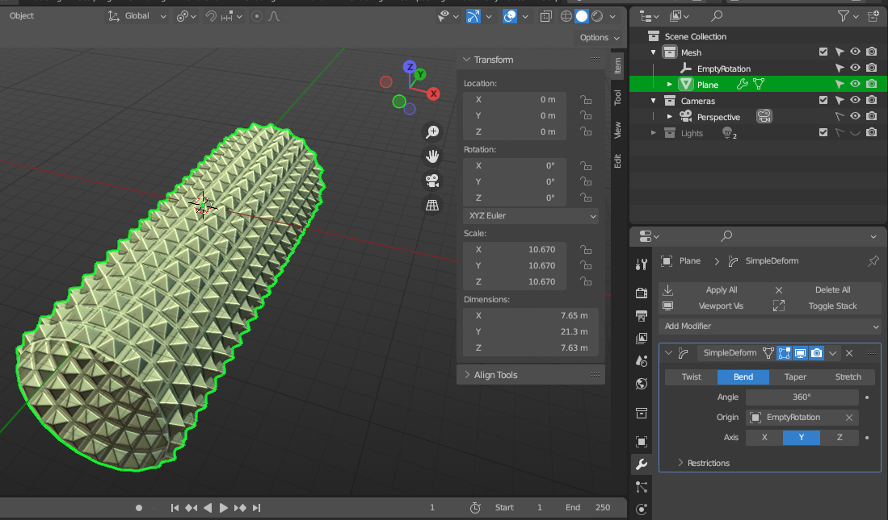 -
Set rotation of Y axis of Empty object.
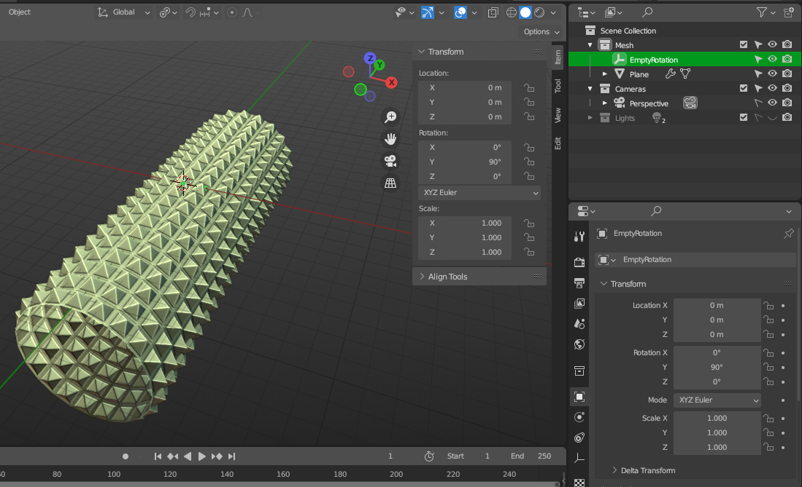
Diamond Grip
-
Add a plane. Subdivide it 25 times horizontally and vertically.
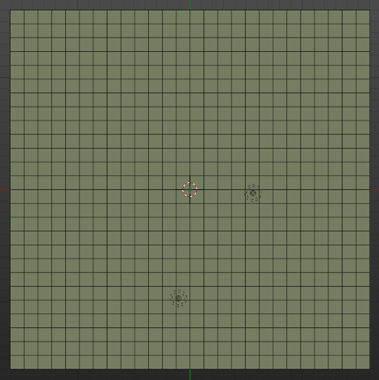 -
Select all faces and poke the faces.
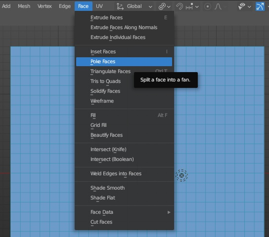 -
Poked faces will look like this
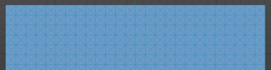 -
Now convert these tris to Quads
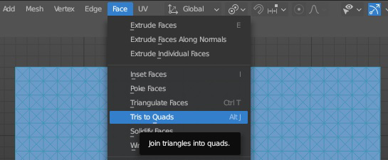 -
Deselect all the faces. To select all the tris, click Select faces by sides. Enter 3 in Number of vertices.
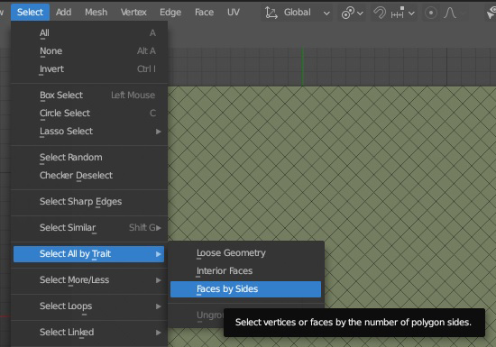 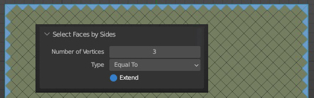 -
To invert the selection, press Ctrl + i
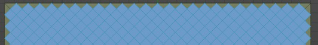 -
Inset the faces individually twice
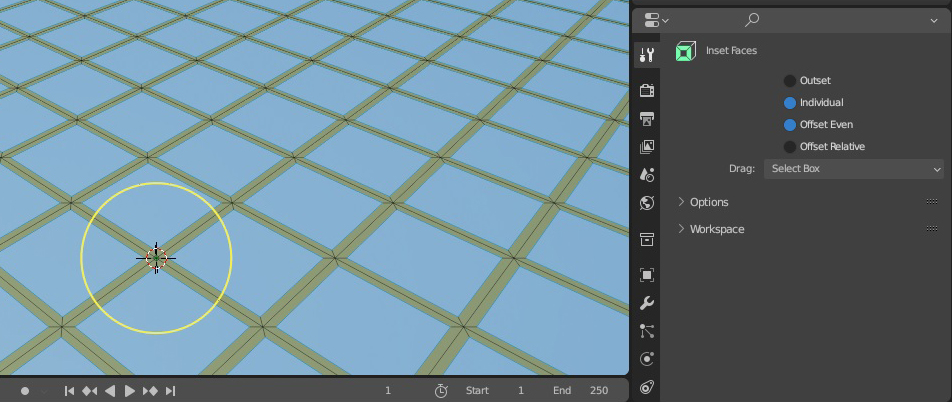 -
Press Alt + s to Shrink flatten
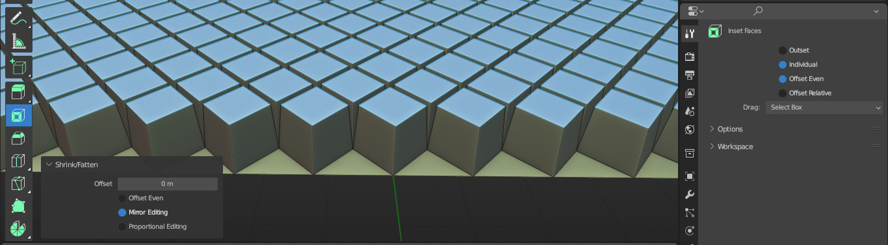 -
Press M and Collapse.
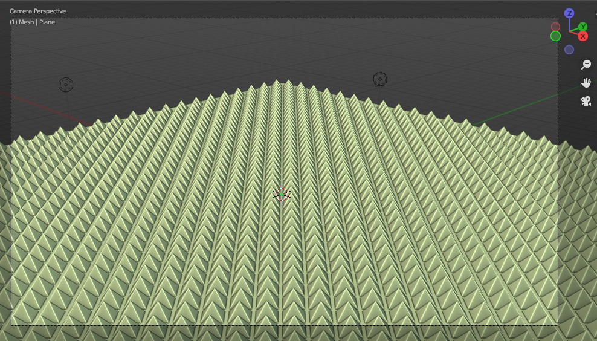 -
Add an empty at the same location of plane. Rotate the Empty by 90 degree in y axis. Select the plane and add Simple Deform modifier.
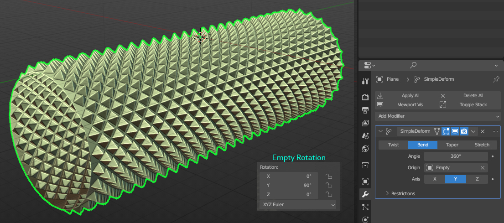